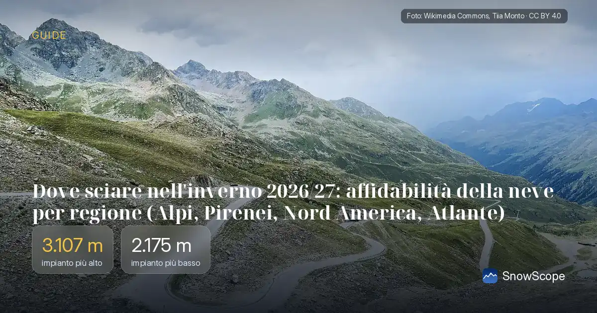

Dove sciare nell'inverno 2026/27: affidabilità della neve per regione (Alpi, Pirenei, Nord America, Atlante)
Alcune stazioni mantengono la neve quasi ogni inverno; altre dipendono dalla fortuna. Abbiamo studiato la profondità della neve a mezza montagna in 46 inverni passati (1980-81 a 2025-26) e contato quanti giorni dal 15 dicembre al 31 marzo hanno avuto almeno 30 cm in 9 inverni su 10. Questo ti dice dove prenotare con certezza.
Le previsioni neve in tempo reale per Kaunertaler Gletscher nell'app SnowScopeAltezza neve, allerte powder e mappa 3D, gratis.
Cosa conta come neve sicura
La stagione sciistica principale dura 108 giorni. Una stazione ottiene lo status di 'neve sicura' se ha almeno 30 cm a mezza montagna per così tanti giorni in 9 degli ultimi 10 inverni. Tracciamo anche i 'giorni tipici': almeno 30 cm in metà degli inverni. Questi numeri vengono dalla nostra storia della neve—un registro della profondità di neve passata corretta per l'altitudine—non da rapporti di stazioni o supposizioni.
L'altitudine conta. Le stazioni più alte tendono ad avere più giorni di neve sicura. Lo stesso vale per i ghiacciai e i versanti esposti a nord, che mantengono la neve più a lungo quando arriva la primavera.

Alpi: la regione più affidabile
Di 1.178 stazioni alpine studiate, 211 hanno almeno 90 giorni di neve sicura. È la storia più forte in Europa. Le più affidabili—Kaunertaler Gletscher e Jungfraujoch Snow Fun Park—raggiungono entrambe 108 giorni, il che significa almeno 30 cm a mezza montagna quasi ogni inverno.
Febbraio è il mese di picco della neve nelle Alpi, con una profondità tipica a mezza montagna di 48 cm. La stazione alpina mediana ha 92 giorni tipici (il che significa che metà degli inverni passati ha avuto 30 cm o più per così tanti giorni). La Grave e Mölltaler Gletscher soddisfano entrambi i criteri: 108 giorni di neve sicura e 108 giorni tipici.

Pirenei: neve più sottile, meno garanzie
Nessuna delle 53 stazioni pirenaiche che abbiamo esaminato raggiunge 90 giorni di neve sicura. La più affidabile, Ordino-Arcalis, ha 64 giorni di neve sicura—buono, ma non garantito. Cauterets Cirque du Lys raggiunge 39 giorni di neve sicura; Formigal e Gourette rimangono sotto i 30.
Febbraio rimane il mese più forte (49 cm tipici a mezza montagna), ma la stazione mediana ha solo 67 giorni tipici. Se scegli una stazione pirenaica, scegline una che sia alta, esposta a nord, o con un ghiacciaio. Prenota tardi nella stagione e controlla la mappa neve in diretta vicino al tuo viaggio.

Ovest degli USA: affidabilità elevata, marzo al picco
Di 195 stazioni dell'Ovest degli USA, 77 hanno 90 o più giorni di neve sicura. La stazione mediana mantiene 72 giorni di neve sicura, il che è solido. Le prime quattro—Mt. Bachelor, Crystal Mountain, Stevens Pass, e Mt Baker—raggiungono tutte 108, più 108 giorni tipici ciascuna.
Marzo è il mese più profondo nell'Ovest degli USA, con 124 cm tipici a mezza montagna. La stazione mediana ha 108 giorni tipici, il che significa che puoi contare su neve decente in metà di tutti gli inverni. L'Ovest degli USA guida il mondo in affidabilità della neve.
Canada occidentale: stagione breve, totali elevati
Di 57 stazioni canadesi, 38 hanno 90 o più giorni di neve sicura. La mediana qui è eccezionalmente alta: 108 giorni di neve sicura e 108 giorni tipici. Sasquatch, Whistler Blackcomb, Mount Cain Alpine Park, e Ski Callaghan offrono tutti i 108 giorni completi di certezza della neve.
Marzo è il mese di picco con 92 cm tipici a mezza montagna. Queste stazioni spesso chiudono all'inizio di aprile, quindi la stagione è più breve che nelle Alpi, ma la neve è affidabilmente profonda mentre dura.
Nord-est degli USA e Marocco: la neve è rara
Nessuna delle 111 stazioni del Nord-est degli USA raggiunge 90 giorni di neve sicura. La migliore—Saddleback Mountain—ha 79 giorni di neve sicura. La mediana è 0, e i giorni tipici mediani sono solo 63. Febbraio raggiunge il picco a 41 cm. I viaggi all'inizio della stagione (prima di Natale) sono rischiosi; le pause sci di fine febbraio offrono le probabilità migliori.
Nelle montagne dell'Atlante in Marocco, abbiamo esaminato 3 stazioni. Oukaimden, la più alta a 3.204 m, ha 81 giorni tipici ma 0 giorni di neve sicura. La neve lì è sottile e inaffidabile. Se pianifichi un viaggio sci in Marocco, vai a gennaio o febbraio e guarda attentamente la mappa.
Consigli per sciatori
- Prenota i viaggi all'inizio della stagione (prima di Natale) solo presso stazioni alte, glaciate, esposte a nord con 90+ giorni di neve sicura. Le stazioni più basse hanno bisogno che la neve invernale arrivi prima.
- Febbraio è il mese più sicuro per la maggior parte delle regioni; marzo mantiene la neve più profonda ad alta quota nel Nord America.
- Nei Pirenei, Nord-est degli USA, e Atlante, guarda la mappa neve in diretta e prenota tardi—la neve può arrivare tardi o sciogliersi velocemente, quindi le decisioni vicine al viaggio funzionano meglio che le prenotazioni in anticipo.
- Le stazioni più basse e meno costose offrono grande valore negli inverni generosi: usa la mappa per individuarle quando la neve sta cadendo.
- Prima di qualsiasi giorno fuori pista, controlla il bollettino valanghe ufficiale della tua regione, anche presso stazioni con lunghe storie di neve.
Su questi numeri
Le altezze neve delle località sono la neve più alta sui pendii superiori alla data indicata; sono stime per un'area, non una misura in un punto. Le previsioni possono cambiare. Leggi sempre il bollettino valanghe ufficiale prima del fuoripista.
Bollettini valanghe ufficiali: EAWS (Europe) · avalanche.org (US) · Avalanche Canada
Cita questo articolo
Per ricerca, didattica o stampa: numeri e grafici sono liberamente riutilizzabili con licenza CC BY 4.0 citando così.
SnowScope (2026), Dove sciare nell'inverno 2026/27: affidabilità della neve per regione (Alpi, Pirenei, Nord America, Atlante), https://snowscope.app/blog/it/2026/11/where-to-ski-winter-2026-27-snow-reliability-by-region.html, consultato il 2026-11-03
SnowScope (Atlas Labs). (2026, November 3). Dove sciare nell'inverno 2026/27: affidabilità della neve per regione (Alpi, Pirenei, Nord America, Atlante). SnowScope snow reports. https://snowscope.app/blog/it/2026/11/where-to-ski-winter-2026-27-snow-reliability-by-region.html
BibTeX
@misc{snowscope2026wheretoskiwinter202627sn,
author = {{SnowScope (Atlas Labs)}},
title = {Dove sciare nell'inverno 2026/27: affidabilità della neve per regione (Alpi, Pirenei, Nord America, Atlante)},
year = {2026},
month = nov,
howpublished = {\url{https://snowscope.app/blog/it/2026/11/where-to-ski-winter-2026-27-snow-reliability-by-region.html}},
note = {Published 2026-11-03 16:34 UTC; accessed 2026-11-03}
}· CC BY 4.0 · Metodi, dati e strumenti →
Kaunertaler Gletscher: neve e temperatura per quota, quest'inverno vs lo scorso (strumenti) →
Segui Kaunertaler Gletscher
Gratis: un messaggio quando arriva la neve e il meteo ogni mattina.